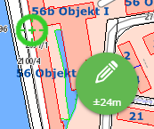
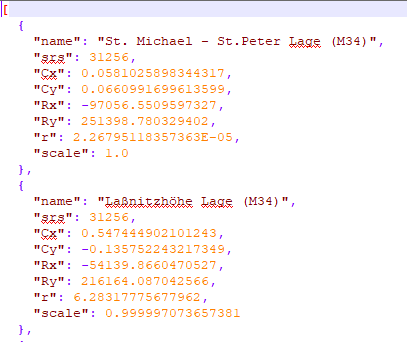

Special Topics¶
Vector Tile Caches¶
Vector tile caches are integrated client-side via the mapLibreGL JavaScript library.
For the library to be loaded, the following entry must be present in custom.js:
webgis.options.load_vtc = true;
The value is set to false by default, since integrating vector tile caches is generally not necessary and loading the library causes additional load time.
As soon as the option is enabled, the mapLibreGL library is automatically loaded once a map with a vector tile cache is integrated.
Spatial Reference System¶
Various coordinate systems can be used for a WebGIS map. Certain calculations, such as measuring a distance, are performed cartesian in the respective map coordinate system. Cartesian in this context means that the (X, Y) values of the current coordinate system are used directly for the calculation.
This can cause problems if the coordinate system has strong distortions, since then the (X, Y) values are no longer true to scale either. A typical example is the WebMercator projection, which shows strong distortion in the north-south direction at our latitudes.
Measured lengths and areas in this projection are therefore always larger than in reality.
To solve this problem, the variable calcCrs can be used. This lets you specify the EPSG code of a coordinate system in which calculations are performed:
if (mapUrlName === "Basemap_at") {
calcCrs = 31287; // Lambert
}
In this example, calculations are performed in the Austria-wide Lambert coordinate system. All coordinates relevant to the calculation are automatically converted internally to Lambert before the calculation is performed.
Further examples:
calcCrs = 31256; // Berechnungen im GK-M34
If calcCrs is not set, the calculation is performed by default in the respective map coordinate system. If this is geographic (longitude and latitude) or WebMercator, it is recommended to explicitly set calcCrs!
WebGIS and GNSS¶
WebGIS can be used with an external GNSS antenna (GPS) for surveying. Since this is a specialized application, only a basic description is given here. More detailed documentation is available on request.
The relevant settings for the custom.js entry are:
webgis.currentPosition = webgis.currentPosition_watch;
webgis.currentPosition.minAcc = 0.5; // Mindestgenauigkeit in Metern
webgis.currentPosition.maxAgeSeconds = 0.1; // Maximales Alter der Positionsdaten in Sekunden
webgis.currentPosition.useWithSketchTool = true;
The last setting enables the use of GPS with all sketch tools. For this, the user gets an additional GPS bubble. This is disabled (gray) by default. If you drag the bubble out of the inactive area, it changes color from red to green once the configured accuracy is reached.
As soon as both the bubble and the displayed crosshair are green, the user can click the bubble to adopt a vertex for the sketch. This process can be repeated as often as needed, as long as the bubble stays active (the map follows the crosshair as it moves). If the bubble is pushed back into the inactive area, GNSS capture ends.

Important
As long as the GPS bubble is active, a vertex can only be set via this tool!
Helmert Transformation (2D)¶
If an additional Helmert transformation (2D) is needed to compensate for tensions in the control point network, it can be defined as follows:
webgis.continuousPosition.helmert2d = {
srs: 31256,
Cx: 0.600,
Cy: -0.234,
Rx: -67946.151,
Ry: 215079.498,
r: 399.9992 * Math.PI / 200,
scale: 1 + (-6.576 * 1e-6)
};
Transformations via a WebGIS Service¶
If different transformations are needed for different regions, these can be automatically retrieved via a transformation info service:
webgis.continuousPosition.useTransformationService = true;
This transformation info service is a WebGIS service that provides the definitions of the respective transformations. The information for the individual transformations must be stored in the directory etc/trafo in the file helmert.json.
The structure of this file looks, for example, as follows:
